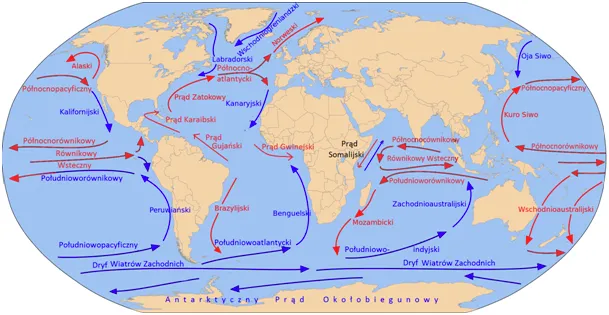
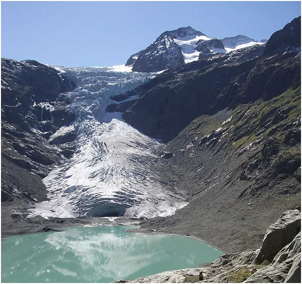
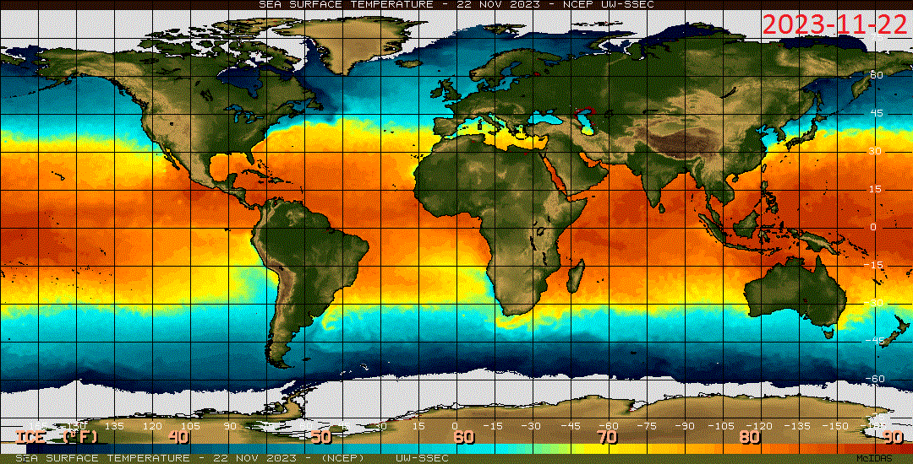

Lodowce topi grawitacja.
Od kilku dekad dzięki internetowi i satelitom obserwuję Ziemię i w ten sposób pozbywam się lokalnej perspektywy, która jest zgubna w percepcji zmian klimatycznych. Mieszkańcy Alp widzą przez okno, że lodowce, które były białe za ich dzieciństwa są obecnie małe i szare. Telewizor daje im gotowe rozwiązanie w postaci globalnego ocieplenia. Robi się cieplej, lód się topi! Genialne!

Tymczasem przez dekady zmienia się trajektoria prądów oceanicznych i na wschodnim Atlantyku zimny Prąd Kanaryjski spycha coraz bardziej na południe ciepłe wody oceanu. U zachodniego wybrzeża Afryki powstaje mniej chmur, a co za tym idzie zmniejsza się ilość deszczy w Europie. Kiedyś Sahara była zielonym, pięknym ogrodem, ale to właśnie wskutek rozwoju Prądu Kanaryjskiego strefy opadów przesuwają się coraz bardziej na północ omijając Europę. Wiedzą o tym doskonale rolnicy, którzy pamiętają poziom wód gruntowych sprzed paru dekad, mam tu na myśli zmiany w okresie już po melioracji pól.

Lodowce są dosłownie rzekami lodu, który topi się w ciepłych dolinach. Śnieg padający w wysokich górach, gdzie cały rok są ujemne temperatury, nie topnieje tylko się nawarstwia. W pewnym momencie jego ciężar powoduje, że zaczyna się osuwać często korzystając z sypkiego podłoża jak z rolek. Takie lodowce wydają dźwięki od trącej o siebie materii. Z każdym metrem niżej w dolinie panuje wyższa temperatura, o 0,6 st. C na każde 100 metrów. Lodowiec zasilany ciągle z nieba nowym śniegiem trwa w swej okazałości jednak, gdy wraz ze spadkiem ilości opadów tempo topnienia w dolinach staje się większe niż tempo dodawania nowego śniegu na szczytach, bilans robi się każdego roku ujemny. W tej sytuacji obserwujemy zmniejszanie się lodowca. Oczywiście dolna granica lodowego jęzora będzie przesuwała się na wyższe wysokości, bo przy stałym tempie topnienia i spadku szybkości schodzenia lodowca cieple wiatry szybciej sobie poradzą z czołem lodowca. Gdy wzrośnie tempo opadów śniegu na górze czoło lodowca zacznie się przesuwać niżej i zagrozi ludzkim osadom.

Porównanie temperatur oceanów wczoraj i sprzed roku wyraźnie wskazuje na ochłodzenie Atlantyku zarówno przy Afryce północnej, jak na południowej półkuli. Mimo, że mamy tam teraz początek lata Antarktyda rozsyła mroźne wiatry i prądy oceaniczne daleko od siebie. Strefa sezonowego lodu jest o setki kilometrów bardziej przesunięta na północ w stronę równika (jeden piksel to +-36 km). Wschodni Pacyfik na równiku jest chłodny jak Bałtyk latem, Morze Kaspijskie skrajnie chłodniejsze na perskim wybrzeżu.
Dla przeciwwagi arktycznego lodu jest mniej, ale nie rekompensuje to spadku parowania oceanów. Mniej pary w atmosferze to słabszy efekt cieplarniany i szybsza ucieczka ciepła zgromadzonego w oceanach w Kosmos z pominięciem atmosfery. Z naszej perspektywy cieszmy się z każdego opadu jaki mamy, bo chłodny Atlantyk to susza i upały w Europie, szczególnie nad Morzem Śródziemnym, gdzie latem dominują cyrkulacje wysokiego ciśnienia.
Paweł Klimczewski